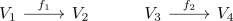

pre- and postcomposition with a linear map is a linear map on Hom
Proposition
Let $V_1,V_2,V_3,V_4$ be vector spaces over a field $K$ and $f_1,f_2$ be vectorspace-homomorphisms

Then they induce vectorspace-homomorphism
\begin{align*}
(f_1)^*: \mathrm{Hom}_{K}(V_2,V_3) \rightarrow& \mathrm{Hom}_{K}(V_1,V_3) \\
g \mapsto& g \circ f_1 \\
(f_2)_*: \mathrm{Hom}_{K}(V_2,V_3) \rightarrow& \mathrm{Hom}_{K}(V_2,V_4) \\
g \mapsto& f_2 \circ g \\
\end{align*}
given by pre resp. postcomposition
Proof
omitted / todo